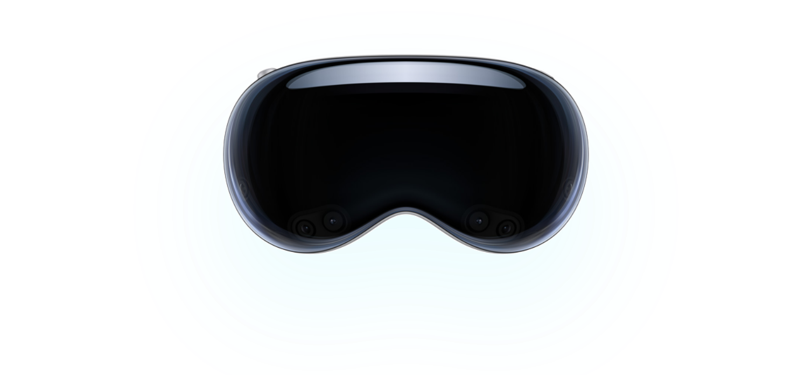
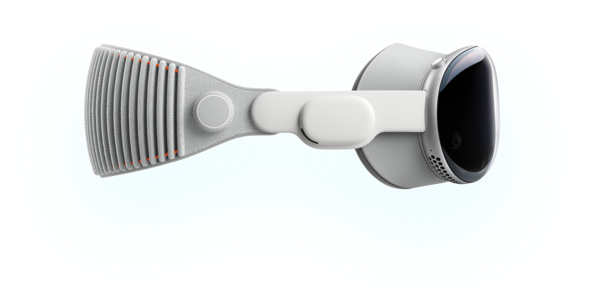

Apple Vision Pro

Apple Vision Pro is a revolutionary spatial computer that seamlessly blends digital content with the physical world, while allowing you to stay present and connected to others.
Learn moreDesign

Apple Vision Pro features a sleek and lightweight design that combines premium materials with advanced technology. The device is crafted from aluminum and glass, with a comfortable and adjustable headband that fits securely on your head. The front of the device features a high-resolution display that provides stunning visuals, while the back of the device houses powerful sensors and cameras that enable spatial computing.